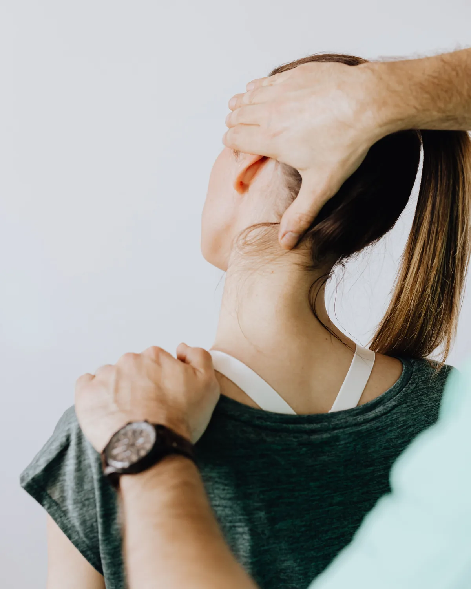
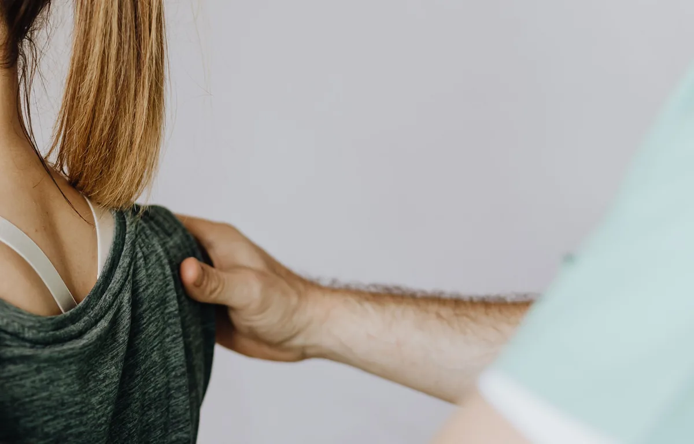
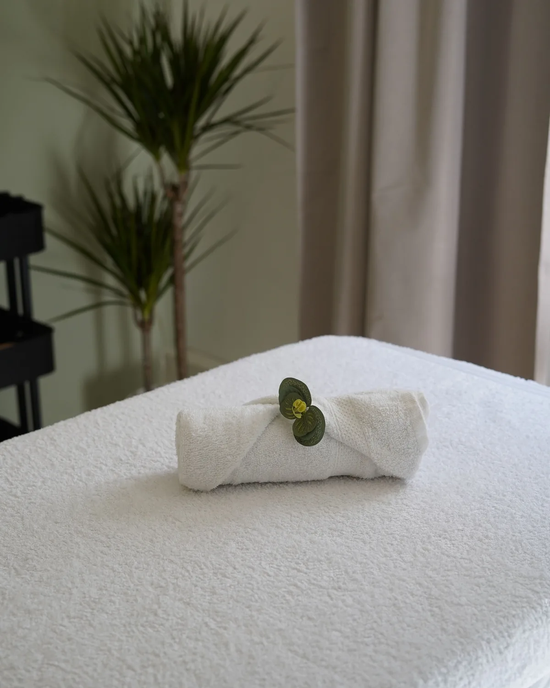
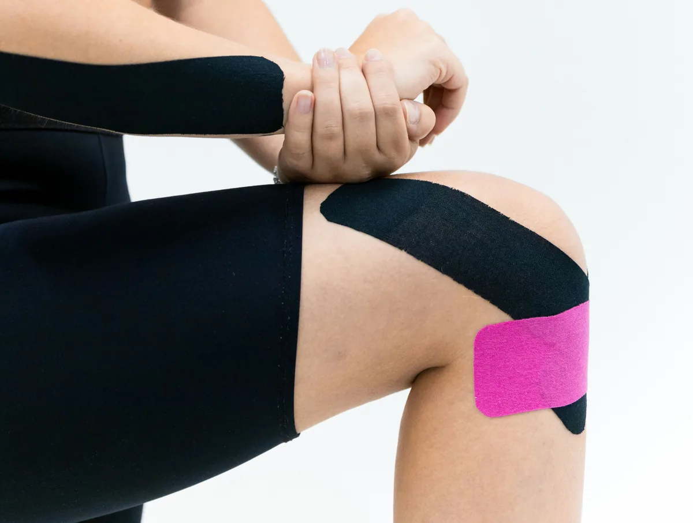

Lucia
Fyzioterapeutka, v praxi od roku 2013. Krk, chrbát a bolesti z práce pri počítači.
- krčná chrbtica
- driek
- držanie tela
Ukážka webu od ARLing, vymyslená prevádzka. Fyzioterapia Os, fyzioterapeuti Lucia a Martin, adresa aj čísla sú vymyslené.Mená, adresa aj čísla sú vymyslené.
Najprv sa opýtame, kde vás to bolí.
Súkromná fyzioterapia v Trnave. Na prvej návšteve vás vypočujeme, vyšetríme, ošetríme a odídete s plánom cvikov na doma.

Ťuknite na miesto na postave alebo vyberte oblasť zo zoznamu. Ukážeme, čo pri nej zvyčajne robíme, s akým plánom rátať a koľko to stojí.
Vyšetrenie panvy a drieku, mäkké techniky, mobilizácia a stabilizačné cviky, ktoré zvládnete doma za 10 minút.
Počet návštev je orientačný. Presný plán povieme až po vyšetrení, nič nesľubujeme dopredu.
Ceny sú konečné a platíte na mieste po terapii. Nemáme zmluvu so zdravotnými poisťovňami, terapiu si hradíte sami.

55 €60 min
Rozhovor, vyšetrenie, prvá terapia a plán cvikov domov.
45 €50 min
Manuálne techniky, mobilizácia a cvičenie podľa plánu. Kineziotejp, ak ho potrebujete, bez príplatku.
30 €30 min
Kontrola cvikov, úprava plánu alebo práca na jednej oblasti.
200 €5 × 50 min
40 € za terapiu namiesto 45 €. Využijete do 3 mesiacov.
0 €do 24 h vopred
Neskôr alebo bez ospravedlnenia účtujeme 20 €, lebo termín už nevieme ponúknuť inému.
Platba v hotovosti alebo kartou, doklad dostanete hneď.
Sme dvaja. Na prvej návšteve si môžete vybrať, ku komu chcete ísť, alebo to necháte na nás podľa toho, čo vás bolí.
Fyzioterapeutka, v praxi od roku 2013. Krk, chrbát a bolesti z práce pri počítači.
Fyzioterapeut, v praxi od roku 2016. Kolená, členky, plecia a návrat k športu po zranení.
„Najprv počúvam. Až potom sa dotýkam.“
Prídete priamo, bez výmenného lístka. Nemáme zmluvu so zdravotnými poisťovňami, terapiu preto hradíte sami.
V hotovosti alebo kartou po terapii. Doklad dostanete hneď, nič sa neplatí vopred.
Pohodlné oblečenie, v ktorom sa dá hýbať, lekárske správy a snímky, ak ich máte, a fľašu vody.
Dve miesta na dvore, prvá brána vľavo. Zastávka MHD je dve minúty pešo.
Pri úraze, horúčke alebo náhlej silnej bolesti choďte najprv k lekárovi alebo volajte 155.


Pondelok až štvrtok od 7:00 do 19:00, piatok do 15:00.
Stavcová 6, 917 01 Trnava
Prízemie, bezbariérový vstup z dvora.
Vyberte, čo potrebujete a kedy sa vám hodí. Ozveme sa do jedného pracovného dňa s konkrétnym časom.